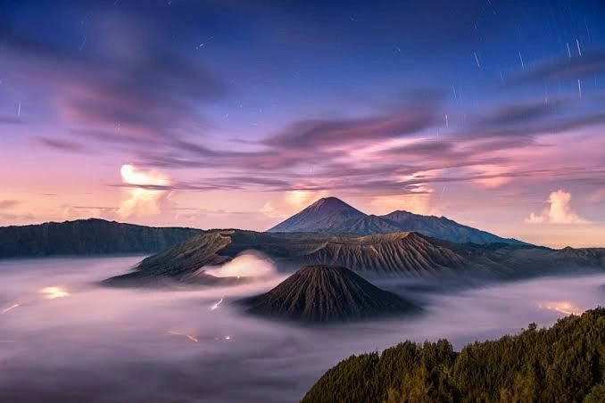

ARTICLE
Hari 1: Awal Perjalanan
Hari ini, aku memutuskan untuk memulai perjalanan yang sudah lama aku impikan. Sejak kecil, aku selalu terpesona oleh cerita-cerita petualangan dan keindahan alam. Dengan ransel di punggungku yang penuh dengan perlengkapan, aku melangkah keluar dari rumah. Cuaca cerah, dan sinar matahari menyinari jalanku. Tujuanku adalah sebuah desa kecil di pegunungan yang dikelilingi hutan lebat dan sungai jernih. Setelah beberapa jam berkendara, aku akhirnya tiba di titik awal pendakian. Sebelum memulai, aku mengamati pemandangan sekeliling. Hutan yang hijau, suara burung berkicau, dan udara segar membuatku merasa hidup. Aku mengeluarkan peta dan memeriksa rute yang akan diambil. Rasa antusiasme meluap saat aku memulai perjalanan. Setiap langkah terasa menyenangkan, meskipun kadang aku harus berjuang melewati jalan berbatu. Di tengah perjalanan, aku berhenti sejenak untuk beristirahat. Aku duduk di sebuah batu besar dan mengeluarkan camilan. Saat menikmati makanan kecil itu, aku merenungkan apa yang mendorongku untuk melakukan perjalanan ini. Mungkin, aku ingin melarikan diri dari rutinitas yang monoton dan menemukan kembali diri sendiri. Setelah beristirahat, aku melanjutkan perjalanan. Jalan setapak semakin menanjak, dan keringat mulai membasahi dahi. Namun, keindahan alam yang mengelilingi membuatku tidak mau berhenti. Aku mulai melihat pemandangan luar biasa: lembah hijau yang luas dan sungai yang berkelok-kelok. Rasanya seperti menemukan surga yang tersembunyi. Saat matahari mulai terbenam, aku tiba di desa kecil itu. Suasana di sini sangat berbeda dari kota. Suara riuh kendaraan tidak ada, yang ada hanya suara alam. Aku merasakan ketenangan yang luar biasa saat melangkah memasuki desa. Penduduk setempat menyambutku dengan hangat, dan aku merasa seperti di rumah.
Hari 2: Pertemuan Tak Terduga
Hari ini, aku bangun pagi dengan semangat baru. Setelah sarapan sederhana yang disajikan oleh penduduk desa, aku memutuskan untuk menjelajahi lebih dalam. Saat berjalan menyusuri jalan setapak, aku bertemu dengan seorang penduduk lokal bernama Budi. Dia tampak ramah, dengan senyum lebar yang membuatku merasa nyaman. Kami mulai berbincang, dan aku menceritakan tujuanku ke desa ini. Budi mengajak aku berkeliling desa. Dia menunjukkan rumah-rumah tradisional yang terbuat dari kayu dan memberi tahu tentang sejarah desa. Kami berhenti di sebuah ladang tempat penduduk menanam sayuran. “Di sini, kami hidup dari pertanian,” katanya dengan bangga. Aku terpesona melihat cara mereka hidup selaras dengan alam. Setelah berkeliling, Budi mengajakku untuk menjelajahi hutan di belakang desanya. Awalnya, aku ragu karena aku tidak begitu mengenal medan. Namun, semangat petualangan membawaku untuk mengikuti. Hutan itu sangat lebat, dengan pepohonan tinggi yang menjulang. Suara burung dan binatang lain membuat suasana semakin hidup. Kami berjalan selama beberapa jam, hingga tiba di sebuah air terjun kecil yang tersembunyi. Airnya jernih dan segar, memantulkan cahaya matahari. Tanpa berpikir panjang, aku menceburkan diri ke dalam air. Suasana hati terasa sangat ceria, dan kami tertawa lepas, menikmati momen kebersamaan. Setelah bermain air, kami duduk di tepi air terjun. Budi menceritakan tentang mimpinya untuk melestarikan alam. Dia ingin agar generasi mendatang bisa merasakan keindahan hutan ini seperti yang kami rasakan sekarang. Aku sangat terinspirasi oleh semangatnya dan berjanji akan membantunya dengan cara apapun yang bisa aku lakukan.
Hari 3: Menjelajahi Hutan
Hari ini, aku dan Budi melanjutkan petualangan kami di hutan. Dengan penuh semangat, kami merencanakan untuk menjelajahi lebih dalam. Budi membawa beberapa makanan ringan dan air untuk persediaan. Kami mulai berjalan lebih awal, saat embun masih menempel di dedaunan. Hutan terasa seperti dunia lain. Cahaya matahari menyaring melalui celah-celah dedaunan, menciptakan pola-pola indah di tanah. Kami menemukan berbagai jenis tumbuhan dan bunga yang tidak pernah kulihat sebelumnya. Budi menjelaskan bahwa banyak dari tanaman ini memiliki manfaat obat, dan dia mengajarkan aku cara mengenali beberapa di antaranya. Setelah beberapa jam berjalan, kami tiba di area yang lebih terbuka. Dari sini, kami bisa melihat pemandangan pegunungan yang mengagumkan. Aku mengeluarkan kamera untuk mengabadikan momen ini. Budi mengajakku berpose di depan latar belakang indah tersebut. Dalam sekejap, kami merasa seperti sahabat lama, meskipun baru mengenal satu sama lain. Saat kami melanjutkan perjalanan, kami mendengar suara gemericik air. Kami mengikuti suara itu dan menemukan sungai kecil yang mengalir. Tanpa ragu, kami memutuskan untuk beristirahat sejenak. Kami duduk di tepi sungai, mencelupkan kaki ke dalam air dingin. Suara gemericik air dan suara burung menciptakan harmoni yang menenangkan. Kami berbagi cerita tentang kehidupan masing-masing. Budi menceritakan tentang tantangan yang dihadapi penduduk desa dan bagaimana mereka saling membantu satu sama lain. Aku merasa terhubung dengan kisahnya, merasakan betapa berharganya komunitas yang saling mendukung. Saat hari mulai gelap, kami memutuskan untuk kembali. Dalam perjalanan pulang, aku merasa lebih dekat dengan Budi dan dengan diriku sendiri. Kesederhanaan hidup di desa ini membawa ketenangan yang sulit kutemukan di kota.
Hari 4: Refleksi Diri
Setelah seharian penuh petualangan kemarin, hari ini aku memilih untuk menghabiskan waktu sendiri. Pagi-pagi, aku bangun lebih awal dan pergi ke tepi sungai. Udara pagi terasa segar, dan sinar matahari mulai muncul di balik pepohonan. Aku duduk di atas batu sambil menikmati pemandangan, membiarkan pikiranku melayang. Aku mulai merenungkan perjalanan hidupku. Banyak hal yang terjadi dalam beberapa tahun terakhir. Kadang-kadang, aku merasa terjebak dalam rutinitas sehari-hari dan kehilangan semangat. Namun, perjalanan ini telah mengingatkanku untuk menikmati setiap momen dan mengejar impian yang sering kali kutinggalkan. Aku mengeluarkan buku catatan dan mulai menulis. Tulisanku mengalir dengan bebas, mencurahkan semua pikiran dan perasaanku. Aku menuliskan harapan dan impian yang selama ini terpendam. Rasanya sangat lega bisa menuangkan semuanya di atas kertas. Aku juga menulis tentang pengalamanku di desa ini, tentang keindahan alam dan persahabatan baru yang kujalani. Saat matahari mulai naik, aku merasa lebih tenang. Aku memutuskan untuk menjelajahi desa lagi. Aku berjalan menyusuri jalan-jalan kecil, menikmati keindahan rumah-rumah kayu yang sederhana. Penduduk setempat menyapaku dengan hangat. Beberapa dari mereka bahkan mengajakku untuk membantu mereka di ladang. Tanpa ragu, aku setuju. Membantu di ladang memberikan pengalaman baru bagiku. Aku belajar cara menanam sayuran dan merawat tanaman. Meski terasa berat, aku menikmati setiap detiknya. Melihat hasil kerja keras bersama penduduk desa memberikan kepuasan tersendiri. Sore itu, aku pulang dengan hati yang penuh, merasakan kedamaian yang sulit dijelaskan.
Hari 5: Ujian Kesabaran
Keesokan harinya, aku bangun dengan semangat untuk menjelajahi lebih jauh. Namun, saat kami bersiap-siap untuk berangkat, cuaca tiba-tiba berubah. Langit yang awalnya cerah kini mendung gelap, dan hujan mulai turun dengan deras. Budi dan aku mencari tempat berlindung dan menemukan sebuah gua kecil di dekat sana. Di dalam gua, kami duduk dan menunggu hujan reda. Meskipun kami terjebak di dalam, suasana di dalam gua cukup nyaman. Kami mulai berbincang-bincang, berbagi cerita tentang keluarga dan mimpi. Budi menceritakan tentang cita-citanya untuk melestarikan hutan dan bagaimana dia berharap bisa memberikan inspirasi kepada generasi muda. Kami tertawa dan saling menggoda, mencoba mengalihkan perhatian dari hujan yang terus mengguyur. Di tengah percakapan, aku merasakan betapa berartinya persahabatan ini. Meski baru beberapa hari bersama, Budi sudah menjadi teman yang sangat berarti. Setelah hujan reda, kami keluar dari gua dan melanjutkan perjalanan. Namun, jalan yang kami lalui menjadi licin akibat hujan. Aku harus lebih berhati-hati saat melangkah. Meskipun terasa menantang, setiap langkah yang kuambil membuatku semakin bersemangat. Saat kami berjalan, kami menemukan beberapa